THIS DOCUMENTATION IS STILL IN DEVELOPMENT, SO THERE MAY BE SOME BUGS IN IT
Logicboard SoM Hardware and Software Documentation
Reference Design Images.
Version 1.0.0
Size - 50mm x 50mm
PCB 3D View 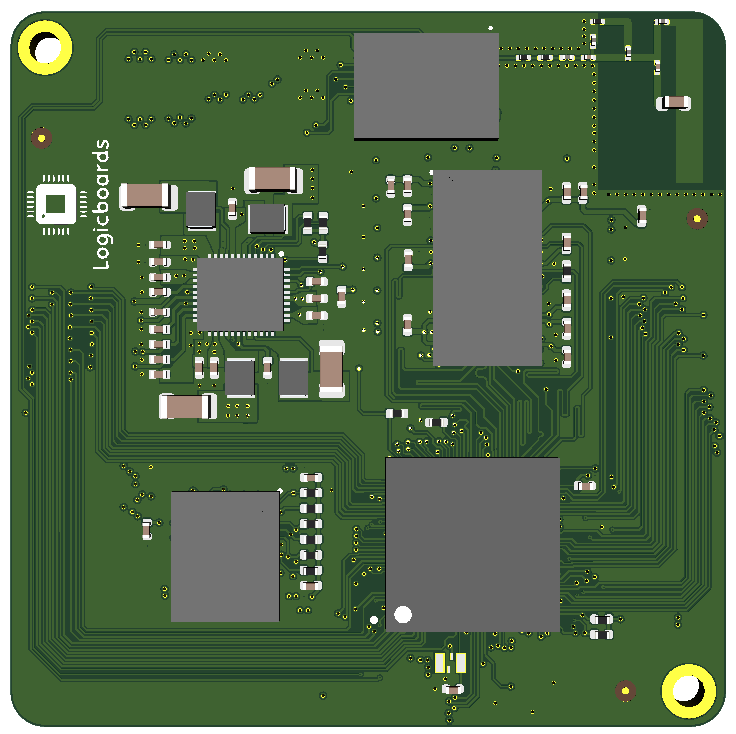
PCB Layout (Top Layer) 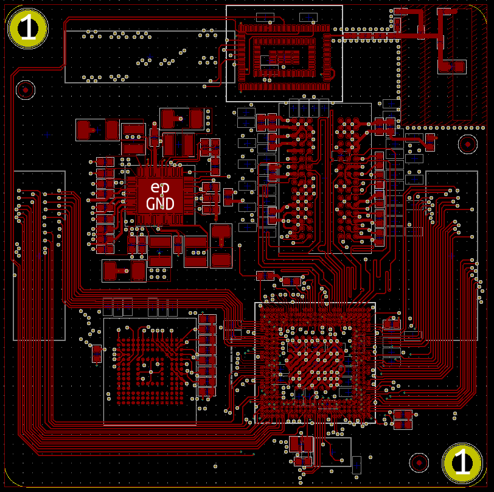
Actual PCB 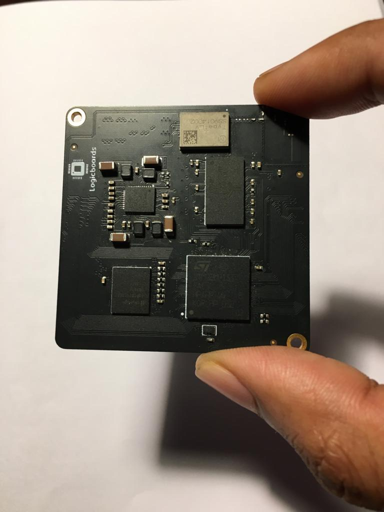
Version 2.0.0
Size - 42mm x 42mm
PCB Layout (Top Layer) 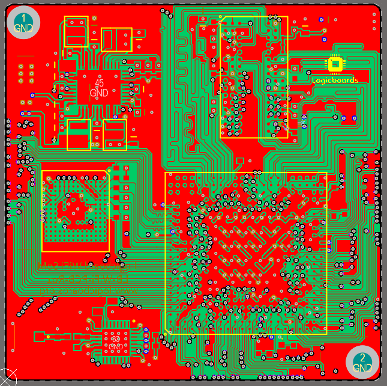
PCB 3D View
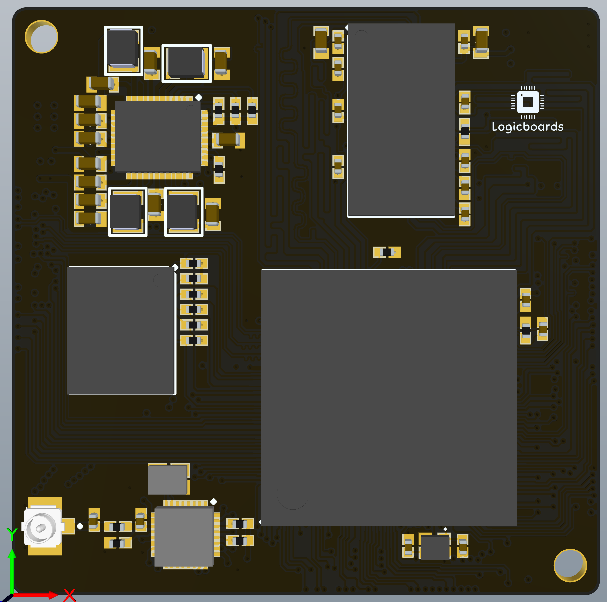
Actual PCB
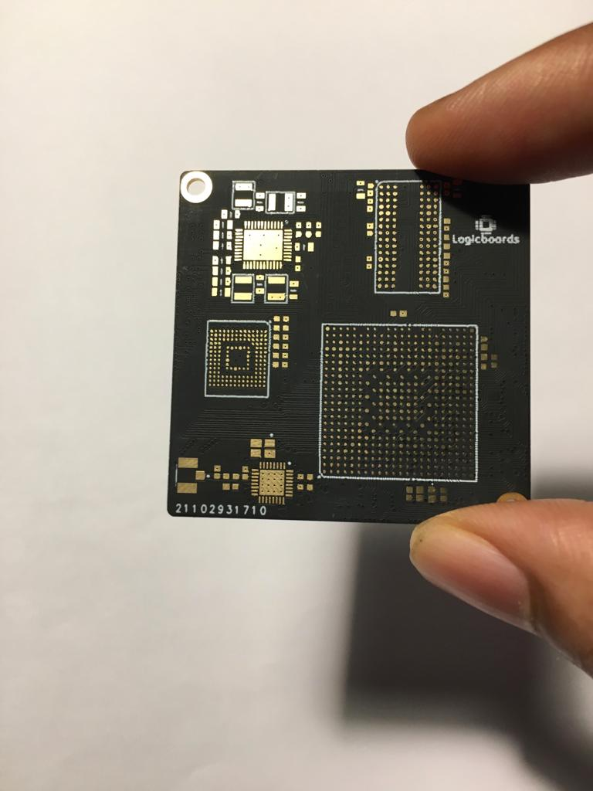
V1 and V2 Size Difference 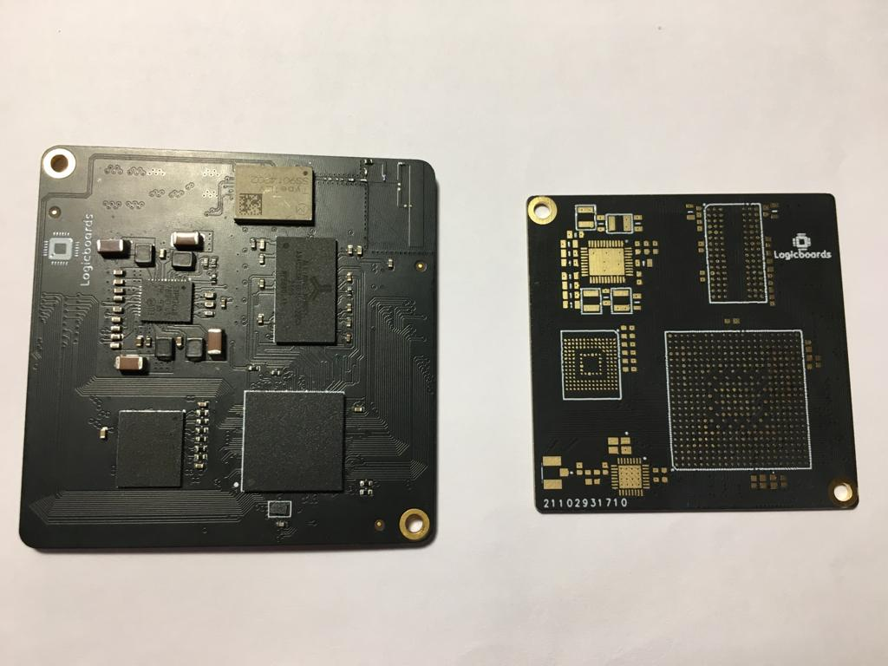
Target Audience
This documentation is targeted at embedded engineers who want to design a system around the STM32MP15x series microprocessors. In this documentation, I've put together a broad overview of what's involved in designing a system around ST-Microelectronics STM32MP15x series microprocessors, and then a dive into some specific parts you should check out — and others you should avoid.
What is a Logicboard?
Logicboard is a System on Module (SoM) that includes ST-Microelectronics Dual Arm Cortex-A7 core operating at 800 MHz + Cortex®-M4 core running at 209 MHz, DDR3L Memory, eMMC Flash, and power circuits.
Key Features of the SoM
- STM32MP157 Arm®-based dual Cortex®-A7 32 bits + Cortex®-M4 32 bits MPU
- 4-Gbit (512MB), DDR3L, 16 bits RAM
- 4GB eMMC Flash
- Wi-Fi® (2.4GHz) and Bluetooth Low Energy 5.0 (next revision)
- Form factor: 42mm x 42 mm Module
Key Features of Carrier Board
- Gigabit Ethernet
- BLE 5.0
- USB-C OTG
- USB-A Host
- Micro SD-Card
- 12V Power Supply Barrel Jack
- MIPI-DSI Port
- RGB LCD Port
- ST-Link Debug
- Boot Switch
- Peripherals (LEDs, Push Buttons)
- GPIO Expansions
Why am I doing this?
I know that there are lots of people — especially hobbyists and even professional engineers who are thinking, “I do all my embedded Linux development with Raspberry Pi boards and BeagleBone Black DKs — Why do I need this SoM?” Yes, Raspberry Pi and Beaglebone Black SBCs, on the surface, look similar to some of these parts: they run Linux, you can attach displays to them, do networking, and they have USB, GPIO, I2C, and SPI signals available.
Now if you dig a bit deep and see, Raspberry Pi's processor BCM2711 was custom-made, from the ground up, to go into smart TVs and set-top boxes — it’s not a general-purpose embedded Linux application processor. This processor has video decoding and graphics acceleration, built-in HDMI transmitters that can drive dual 4k displays but just two PWM channels and not even a single ADC input. Plus you cannot run real-time tasks on this board and this beast consumes a lot of power. So it isn’t generally suited for embedded Linux work. They are primarily designed to make commuting accessible to everyone. Of course, there are workarounds — like I2C-interfaced PWM chips, SPI-interfaced ADCs, or LCD modules with HDMI receivers — but they involve external hardware that adds power, bulk, and cost. If you’re building a quantity-of-one project and you don’t care about these things, then maybe the Pi is the right choice for the job, but if you’re prototyping a real product that’s going to go into production someday, you’ll want to look at the entire landscape before deciding what’s best.
Some parts of the aforementioned shortcomings hold true for Beaglebone Black also. Although this SBC is ideal for embedded Linux work, you cannot run Real-time applications in them (Okay! you can, but it is quite difficult). And when it comes to production, you've got to design your product from scratch which increases, time to market, project costs, development risks etc. I believe this will be a risky investment for entrepreneurs willing to put everything on the line.
On top of everything I mentioned, HDMI is of no use to an embedded Linux developer, as all LCDs use parallel RGB, LVDS, or MIPI as interfaces.
Let's get started
When you pick a Microcontroller, you should pick the right part for the job and not be afraid to learn whole new software ecosystems. Now, the best part of working with Microprocessors is that once you’re booted into Linux on basically any Microprocessors, they become identical development environments. As long as your processor checks off the right boxes, your application code won’t know if it’s running on an ST or a Microchip part — even if one of those is a brand-new dual-core Cortex-A7 and the other is an old ARM9. Your I2C drivers, your GPIO calls — even your V4L-based image processing code — will all work seamlessly. At least, that’s the sales pitch. Getting a Microprocessor booted is a completely separate experience, and that's what we'll be concentrating on.
For now, I’m focusing heavily on hardware design. These chips vary considerably in PCB Design difficulty when compared to a traditional Microcontroller. I intentionally designed these boards from scratch rather than starting with the Manufacturer's CAD files. This approach helped me to understand the little intricacies of the MPU, as well as optimize the design for cost and hand-assembly. Later in this documentation, I'll include some pictures of the boards and screenshots of the layouts to illustrate some points.
Before we begin, let's take a quick detour and study some basics.
Microcontroller vs Microprocessor
The first thing you'll notice if you're coming from microcontrollers is that Linux doesn't normally work on Cortex-M, 8051, AVR, or other popular microcontroller architectures. Rather, we use application processors, such as the Arm Cortex-A, MIPS, and other variants. The most notable difference between these application processors and microcontrollers is that microprocessors include a memory management unit (MMU), whereas microcontrollers do not. Although you can run Linux without an MMU, but it's not recommended. Aside from the MMU, the distinction between MCUs and MPUs is becoming increasingly blurry. Modern application processors share many of the same peripherals as microcontrollers, and high-end Cortex-M7 microcontrollers offer clock speeds that are comparable to entry-level application processors.
Choosing Linux
Why is Linux so pervasive? And why does something as simple as a TV need to run something as complex as Linux just to display streaming video on a screen? The simple answer is Your TV is not simply displaying a video stream as the old analog sets used to do. The stream is digital, possibly encrypted, and it needs processing to create an image. Your TV is connected to the internet. It can receive content from smartphones, tablets, and home media servers. It can be (or soon will be) used to play games and so on. You need a full operating system to manage this degree of complexity.
Here are some points that drive the adoption of Linux:
- Linux has the necessary functionality. It has a good scheduler, a good network stack, support for USB, Wi-Fi, Bluetooth, many kinds of storage media, good support for multimedia devices, and so on. It ticks all the boxes.
- Linux has been ported to a wide range of processor architectures, including some that are very commonly found in SoC designs – Arm, MIPS, x86, and PowerPC.
- Linux is open source, so you have the freedom to get the source code and modify it to meet your needs. You, or someone working on your behalf, can create a board support package for your particular SoC board or device. You can add protocols, features, and technologies that may be missing from the mainline source code. You can remove features that you don't need to reduce memory and storage requirements. Linux is flexible.
- Linux has an active community; in the case of the Linux kernel, very active. There is a new release of the kernel every 8 to 10 weeks, and each release contains code from more than 1,000 developers. An active community means that Linux is up to date and supports current hardware, protocols, and standards.
- Open source licenses guarantee that you have access to the source code. There is no vendor tie-in.
For these reasons, Linux is an ideal choice for complex devices.
When not to choose Linux
Is Linux suitable for your project? Linux works well where the problem being solved justifies the complexity. It is especially good where connectivity, robustness, and complex user interfaces are required. However, it cannot solve every problem, so here are some things to consider before you jump in:
- Is your hardware up to the job? Compared to a traditional real-time operating system (RTOS) such as VxWorks or QNX, Linux requires a lot more resources. It needs at least a 32-bit processor and lots more memory. I will go into more detail in the section on typical hardware requirements.
- Do you have the right skill set? The early parts of a project, board bring-up, require detailed knowledge of Linux and how it relates to your hardware. Likewise, when debugging and tuning your application, you will need to be able to interpret the results. If you don't have the skills in-house, you may want to outsource some of the work.
- Is your system real-time? Linux can handle many real-time activities so long as you pay attention to certain details.
- Will your code require regulatory approval (medical, automotive, aerospace, and so on)? The burden of regulatory verification and validation might make another OS a better choice. Even if you do choose Linux for use in these environments, it may make sense to purchase a commercially available distribution from a company that has supplied Linux for existing products, like the one you are building.
Hardware Design & BGA Packages
When it comes to building hardware with the Microprocessors, customers are usually encouraged to modify and reuse processor suppliers' reference designs. But depending on the complexity of your project you might have to design your own. All the variants offered by ST comes in BGA Packages. These seem to make less-experienced engineers nervous — both during layout and prototype assembly but actually, BGAs are much easier to design around than high-pin-count ultra-fine-pitch QFPs. You just have to have the right mindset.
ST offers different BGA packages, but the e package must be selected by taking into account the constraints that are strongly dependent upon the application. The list below summarizes the more frequent constraints:
- Amount of interfaces required. Some interfaces might not be available on some packages. Some interfaces combinations might not be possible on some packages. Always refer to product datasheets for details
- PCB technology constraints. Small pitch and high ball density could require more PCB layers and higher PCB class requiring stack-up with micro-via (laser via) technology
- Package height
- PCB available area
- Thermal constraints (larger packages have better thermal dissipation capabilities) 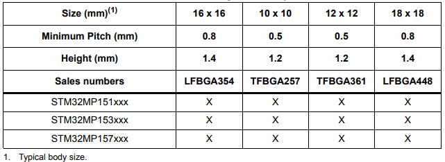
Routing and Vias
When pricing a PCB, the size of the traces and vias directly affect the cost to manufacture the board. However, larger traces and vias, while cheaper, can make layout more difficult. Therefore, it is necessary to understand the optimum size of traces and vias for a given design.
Trace size background information
The number of traces that can pass between any two pads of a BGA footprint depends on the trace width and trace spacing. Trace width is the actual width of the trace. Trace spacing is the distance between the edges of any two adjacent traces or a trace and a pad. Trace widths and clearance are shown below.
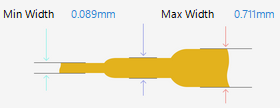 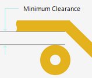
A “x/y trace” indicates a PCB that uses design rules with trace width of x mils and trace spacing of y mils. For example, a 5/6 trace indicates a PCB with trace width of 5mils and trace spacing of 6mils.
The number of traces that can be routed between any two adjacent pads of the BGA can be calculated using the formula (formula assumes all the traces are equal width):
tn tw + (tn + 1) ts <= BP – BD
where,
tn = number of traces
tw = trace width
ts = trace spacing
BP = BGA pitch
BD = BGA ball diameter
For example, to calculate the number of 5/5 traces that can be routed between adjacent pads of a typical BGA package assuming : tw = 5mils, ts = 5mils, BP = 39.37mil (1mm) and BD = 13.78mil (0.35mm)
Using all this in the above equation:
5tn + 5(tn + 1) <= 25.59
10tn <= 20.59
tn <= 2.059 traces.
This result indicates that two (2) full 5/5 traces can be routed between adjacent balls of the BGA package.
Via size background information
There are two important parameters for vias: drill diameter and annular ring thickness. Drill diameter is the diameter of the actual drilled hole in the PCB. The annular ring thickness is the thickness of the pad that surrounds the drilled hole.
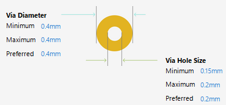
To determine the diameter of the finished via, use the following formula:
Finished via diameter = Drill diameter + 2 x (Annular ring thickness)
A “x/y via” indicates a via with drill diameter of x mils and finished via diameter of y mils. For example, a 12/24 via indicates a via with drill diameter of 12mils and finished via diameter of 24mils.
Package selected and design considerations
In my case, I choose two very different packages offered by ST based on features.
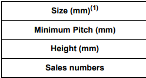 
I've opted for the following rules.
PCB Rule for 0.5mm pitch package for TFBGA361 Package
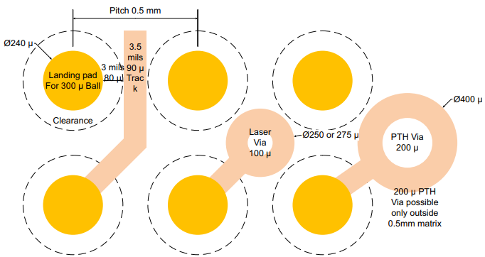
PCB Rule for 0.65mm pitch package for Power improved pitch on TFBGA361

PCB Rule for 0.8mm pitch package for LFBGA448 Package
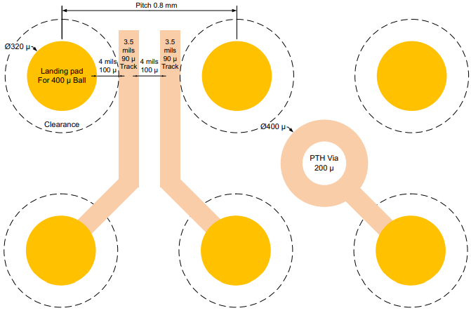
Decoupling
All the power supply and ground pins must be properly connected to the power supplies. These connections, including pads, tracks and vias should have as low impedance as possible. This is typically achieved with thick track widths and, preferably, the use of dedicated power supply planes in multilayer PCBs. In addition, each power supply pair should be decoupled with ceramic capacitors most of the time 100nF or 1µF. These capacitors need to be placed as close as possible to, or below, the appropriate pins on the underside of the PCB. Exact values might depend on the application.
Grounding on PCBs
The term "Ground" refers to the "Earth"
UL requires (for safety reasons) the Green wire (Yellow wire, Yellow/Green wire etc.) connect from "Chassis" of electrical system to the "Earth". Reason being, if the phase wire accidentally touches the chassis of the system, then if someone walks up to the chassis and touches it, the electrical current passes through the person's heart and may kill him. So if a phase wire shorts to chassis, then we want high enough current to pass through the Grounding wire so that the Circuit breaker/ fuse can trip off. ****Safety is the only value of that wire in the electrical system and it has nothing to do with passing through EMI/EMC standards.
EMI personal often incorrectly refer to the Faraday cage or Shielding surrounding a product as earth ground or chassis ground. Faraday's cage's only function is to keep the fields in the unit inside the unit and the outside fields from entering into the unit.
If an electrical system or a product has a shield and a chassis, then it is recommended to connect the shield of the system to the system's chassis because, the shield is simply being the continuation of the Faraday's cage. It is not recommended to connect the shield to the product's ground.
Ground on PC Boards is often considered as the region of Zero Volt potential with Zero resistance and impedance. However, this is NOT TRUE. It is only close to Zero volts but not Zero volts. It is close to true only in the case of DC because when you send energy down the transmission lines, then you get current in the ground and that current cases a voltage drop and that voltage drop means the ground potential from one point to the other is never Zero.
Let's talk about Energy
What is Energy? ...the property of matter that manifests itself as the capacity to perform work and it exists in many forms (mechanical, light, sound, heat, electrical etc.) Energy can neither be created or destroyed it can only be transformed from one form to the other.
Light energy and electrical energy are precisely the same forms of energy. The only difference is light is a million times higher frequency than Electrical energy at 500 MHz in the signal lines.
Q: Where is the energy in the circuit? Is it in the voltage or is it in the current?
A: Neither. It is not in the voltage or in the current. The energy is in the fields, better know as the electric fields and magnetic fields.
Q: Where is the energy located in the circuit board? Is it in the traces or is it in the planes?
A: Neither. The energy doesn't travel in the copper. The energy travels in the spaces between the traces and the planes...in the dielectric. The energy in the FR-4 circuit board travels in the plastic and fibre glass material of the PC Board. No energy travels in the copper. The energy that travels between the traces and planes creates a current in the copper which intern creates voltage drop in the circuit but not the other way around. Think about it, it makes sense why Circuit A or Trace A interferes with Circuit B or Trace B or why energy is coupled from one place to the other even though the circuits are not connected to each other. This interference happens only when good care is NOT taken of the space between the trace and return paths. It is all about the space.
Note: The Fields (E and H Fields) carry energy and they create voltage and current not the other way around.
Energy in Wave guides.
The energy in a transmission event is called a wave, an electromagnetic wave. The traces or the trace and plane that make up the transmission line steer the energy from point A to point B. These copper elements act as a wave guide. So as the trace travels through the circuit board above a plane, the energy travels between the space of the trace and the plane (the dielectric). Why does it do that? Because it is the path of lowest impedance for the energy. Of course the air has a lot lower impedance than the dielectric but there is not trace or place hanging in the air. These copper elements acts as a wave guide, whether it is a power system or signal or a digital system; every forward path and return path constitutes as a wave guide which guides energy from point A to point
A transmission line or wave guide both are same, is a pair of conductors or wires used to move energy from point A to point B. Voltage across copper and current in the copper.
How does a circuit work?
Wrong: When you launch energy into a circuit, the current travels down the trace and into the load and comes back up the ground trace to the driver. WRONG!!
Correct: The energy is launched into the circuit in the form of a wave consisting of fields. The fields create a voltage across both copper features at the same time (trace and ground) and they create a forward and return current in both the copper features at the same time. So the forward current and return current are formed at the exact same time. This is the reason why ground potential is never zero but close to zero. The current is not down and back kind of thing, it is the simultaneous thing.
Stripline Wave Guide (Centred Strip Line)
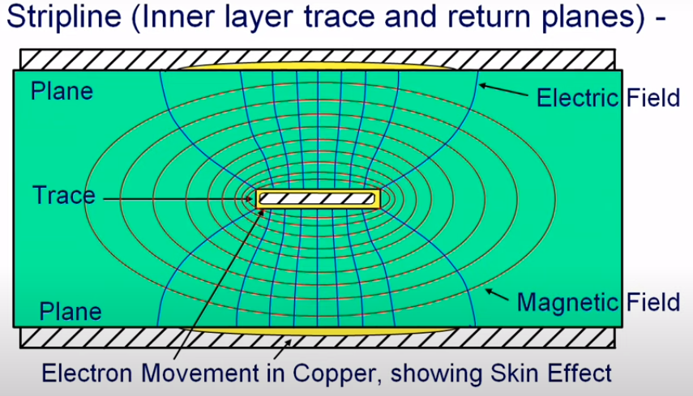
This is a centred stripline. When we launch energy into the stripline, the first thing that appears is the electric field, it is coupled from that trace to the planes and the energy in that field excites the electrons of the copper and electrons start to move causing current flow in the copper of planes and the copper of the trace. The reaction to that is to form a magnetic field which surrounds the trace and is sandwiched between the trace and the planes. Notice all of that energy is in that space between the trace and the planes. It also spreads a little bit to the outside, it is the spreading of the energy and that spreading of energy is what causes that cross talks and other sorts of interference if things are too close to one another.
Microstrip line
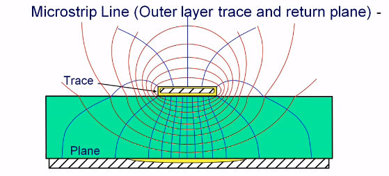
These are the fields of an outer layer of the transmission line. The trace routed above a ground plane and on the 1st layer of the board. You can notice the fields expand more than on the fields on the inner layers. This expansion causes some radiation from the outer surface of the boards. The fields expand more on outer layers, cross talks are more on outer layers if good care is not taken in the spacing.
Let's talk about Return Path
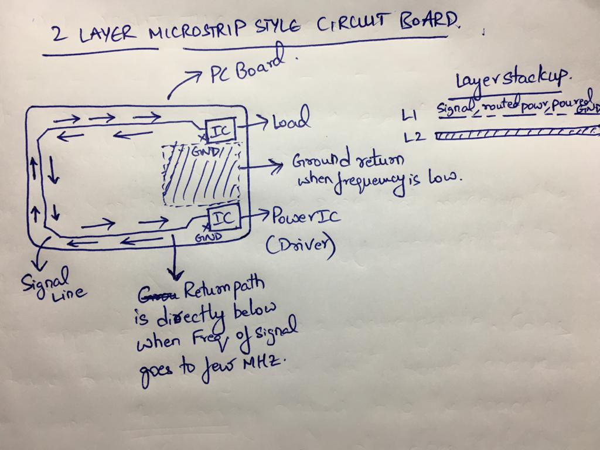
Imagine a 2 Layer Microstrip style PC Board, where a signal is routed from Driver IC to the Load and load and the driver ICs are connected to the ground plane through a via.
Now when the frequency of the signal is low say just DC energy that doesn't change state is being fed say power supply is being fed, then the return path for the current would be the short and quick path cross the plane between the ground pins of the ICs. Why? Because at very low frequencies, current will take the path of least resistance, since impedance of "L" becomes negligible compared to "R" because the formula for Transmission Line impedance says ⇒ Z = Sqrt [(R+jwL) / (G + jwC)]) According to the formula it says impedance is the square root of Resistance + Frequency times Inductance. Now as the frequency gets low, inductance becomes low. In the case of DC frequency is 0 so inductance is 0 and hence it only depends on the resistance of the copper.
The DC current wouldn't just take the short path on the PC Board, it would spread out to a very wide swath and the swath would be about as wide as it is long. So it would effectively form a square because the DC would take the path of least resistance because resistance is per square measurement, therefore the current path would be a square.
Now if you could change the frequency of the output signal from the driver IC to a few KHz or MHz, then the return current path for the signal travel directly below the trace between the driver and receiver ICs. Remember the forward and return current are being generated simultaneously. The arrows in the above image indicate that.
Experiment to show current / energy takes the path of least impedance.
To prove the this point you can run a simple experiment in your lab.
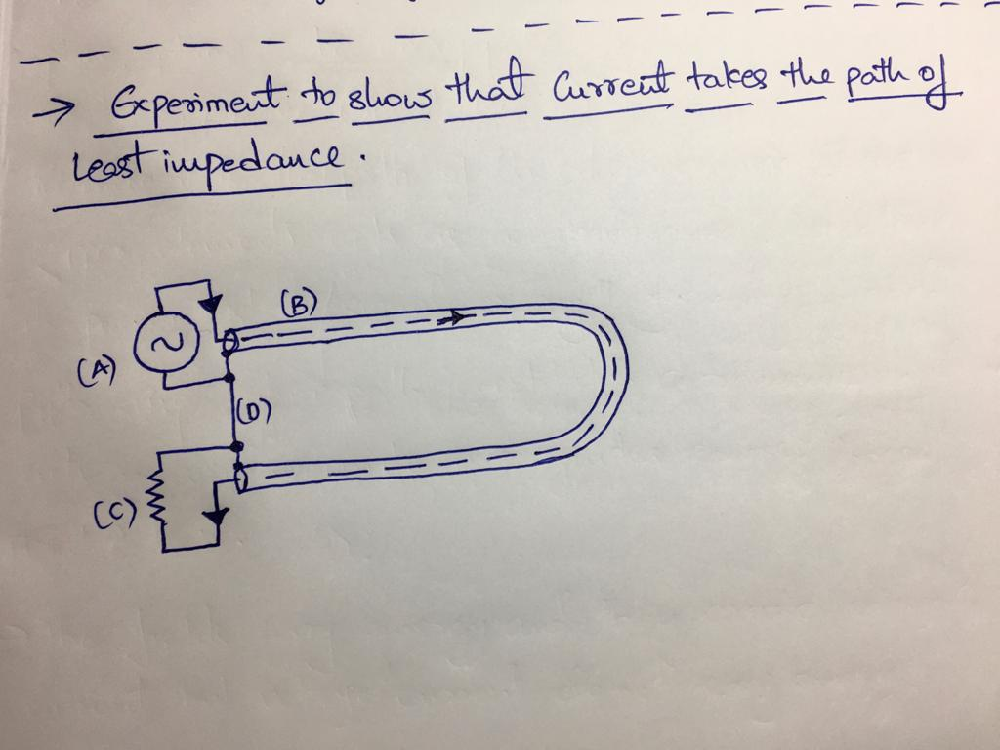
Connect a 2 meter Co-axial cable (B) and loop it back such that the ends of the co-axial cable are near one another separated by 2 inches and couple the shields of the co-axial cable together with 2 inch piece wire (D) and attach a signal generator (A) to one end and a load resistor (C) to the other end of the co-axial. Do a basic calculation on how much current the resistor can take and put a current loop around that piece of wire. Then turn on the signal generator and put it in DC mode and send energy through the co-axial. Now what you will notice is that, the return current will pass through that short piece of wire (D) and not on the co-axial shield. Now if you increase the frequency in the signal generator (A), what you will notice is that as the frequency gets higher and higher, the return current in the short piece of wire (D) connecting the shields of co-axial cable will reduce. Now after the signal frequency reaches some MHz you will notice that almost no current flows through (D). All of the return current flows through the shield of the co-axial cable (B) even though the length of the co-axial able is longer than the (D). This is because it has a lot less impedance i.e. a path of lowest impedance and greatest capacitance ⇒ according to the impedance formula.
This experiment proves that, energy always takes the path of least impedance.
Impedance
When the return current path is directly under the trace, we often refer to it as the "Path of least impedance" because energy always takes the path of lowest impedance. Impedance is essentially the path of lowest inductance and greatest capacitance coupled.
What is inductance (L)?
Inductance (L) is an impedance to change in current flow, caused by the (inertia) magnetic field, meaning what? Now imagine you have two traces side by side separated by some spacing , one is the forward path and the other is the return path. Now when you launch energy into this circuit, the fields exists between these space and the magnetic field is going to be of large size because of the spacing and result of its large size it will have higher inertia which means it will create high impedance for the current change in the circuit. That is what drives up inertia. Large volume of magnetic fields equals large volume of Inductance.
How to reduce Inductance and increase capacitance? In other words, how to reduce impedance?
Instead of having the traces far apart, bring them closer to each other. Now you will have a small volume of space for the magnetic fields and the end result is you will have small field, small emission and low inductance. The best of all, put one directly above the other meaning have the forward path and the return path directly over one an other in the board stack. Route everything above the ground plane and keep the dielectric small and you will minimise the inductance.
How do you create a low inductance or low impedance in the power vias of a decoupling capacitors?
You do not need large vias to create low inductance. You can achieve that by bring the vias very close to each other. You keep it at the side of the capacitor pads. If possible keep it on the pads of the capacitors.
Routing Low frequency and High Frequency signals.
If you were to route low frequency signals, try to route the forward and return path close to each other. Better would be directly above one another. Because low frequency signals tends to spread a lot. You need to channel it such a way that it follows a path of least resistance or impedance. That would be traces directly on top of one another.
When it comes to high frequency signals, if you are not cognisant about how you route the forward and return path such that they have least impedance then the high frequency signals will self channel itself on the least impedance path meaning it might use traces adjacent to it as a return path causing cross talks.
You have to route every signal with respect to the ground like you actually mean it. You cannot route them randomly and say "Hey it will find it's ground". It doesn't work that way. That's not how circuits work. Every signals needs to have an intentional low impedance ground nearby. Always try to reference a signal to a ground place below it.
Is it okay to reference a power place for a signal as a return path?
Answer: Yes, if and only if, you reference a power plane that generated the signal. Let's say the signal is generated by a 5V driver as a 5V signal. Then you could reference it with a 5V power place meaning you could come out of the driver route across the 5V power plane to the receiver. You cannot reference it with a 3.3V plane. Also make sure to the power plane has a Ground plane reference close by. But it is generally not a good idea to change layers when you do reference a power plane.
Position of components
Group components by Function/Family.
- Analog in one area, Digital in another.
- Devices operating at different voltages in their own respective areas.
- Devices operating at different frequencies in their own respective areas.
- All ICs routing to connectors must be placed very near to their respective connectors and try to filter out the signals going to the connector or cable because if you don't then the noise, will go to the other board or worse if it goes into the cable, the cable may act like an antenna and radiate the energy.
Separate the analog and digital sections by a distance of 20 x the thickness of dielectric between the layers and do not split the ground planes. If you want to avoid coupling of noise from one section to the other, just split the power planes only and do not split ground plane and it should work. Do not route across split ground planes and split power planes. It will generate a lot of EMI problems.
Try avoiding to route on the ground planes. If you have to then keep it as short as possible.
Use a zero ohm resistor to cross slower signals over other signals. Do not do this with high frequency signals because a zero ohm at frequency is not a zero ohm resistor.
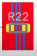
6 layer PC board stackups to avoid
L1 - Signal
L2 - Signal
L3 - Ground
L4 - Power
L5 - Signal
L6 - Signal
L1 - Signal
L2 - Power
L3 - Signal
L4 - Signal
L5 - Ground
L6 - Signal
Best 6 layer board layer stackup
L1 - Sig/power
L2 - Ground
L3 - Sig/Power
L4 - Ground
L5 - Sig/Power
L6 - Ground
L1 - Sig/power
L2 - Ground
L3 - Sig/Power
L4 - Ground/Signal
L5 - Ground
L6 - Signal/Power
DDR Routing
It’s worth investing a bit of time to learn about length-tuning and controlled impedances since it will give you immense design flexibility when architecting your system. When most people think of DDR routing, length-tuning is the first thing that comes to mind. If you use a decent PCB design package, setting up length-tuning rules and laying down meandered routes is so trivial to do that most designers don’t think anything of it — they just go ahead and length-match everything that’s relatively high-speed — SDRAM, SDIO, parallel CSI / LCD, etc. Using a proper PCB stack-up (usually a ~0.1mm prepreg will result in a close-to-50-ohm impedance for a 5mil-wide trace) is your first line of defense against impedance issues, and is usually sufficient for getting things working well enough to avoid simulation / refinement. The biggest source of EMC issues related to DDR3 is likely going to come from your address bus. DDR3 uses a one-way address bus (the CPU is always the transmitter and the memory chip is always the receiver), and DDR memory chips do not have on-chip termination for these signals. Theoretically, they should be terminated to VTT (a voltage derived from VDDQ/2) with resistors placed next to the DDR memory chip. On large fly-by buses with multiple memory chips, you’ll see these VTT termination resistors next to the last chip on the bus. The resistors absorb the EM wave propagating from the MPU which reduces the reflections back along the transmission line that all the memory chips would see as voltage fluctuations. To reduce cross-talk, you can put plenty of space between traces — three times the width (3S) is a standard rule of thumb.
DDR Pin Swapping
Because DDR memory doesn’t care about the order of the bits getting stored, you can swap individual bits — except the least-significant one if you’re using write-leveling — in each byte lane with no issues. Byte lanes themselves are also completely swappable. Having said that, since all the parts I reviewed are designed to work with a single x16-wide DDR chip (which has an industry-standard pinout), I found that most pins were already balled out reasonably well. Before you start swapping pins, make sure you’re not overlooking an obvious layout that the IC designers intended.
DDR Routing Recommendations
Pay attention to PCB stack-up. Use a 4-layer stack-up with thin prepreg (~0.1mm) to lower the impedance of your microstrips — this allows the traces to transfer more energy to the receiver. Those inner layers should be solid ground and DDR VDD planes respectively. Make sure there are no splits under the routes. If you’re nit-picky, pull back the outer-layer copper fills from these tracks so you don’t inadvertently create coplanar structures that will lower the impedance too much.
Avoid multiple DRAM chips. If you start adding extra DRAM chips, you’ll have to route your address/command signals with a fly-by topology (which requires terminating all those signals — yuck), or a T-topology (which requires additional routing complexity). Stick with 16-bit-wide SDRAM, and if you need more capacity, spend the extra money on a dual-die chip — you can get up to 2 GB of RAM in a single X16-wide dual-rank chip, which should be plenty for anything you’d throw at these CPUs.
Faster RAM makes routing easier. Even though our processors reviewed here rarely can go past 400-533 MHz DDR speeds, using 800 or 933 MHz DDR chips will ease your timing budget. The reduced setup/hold times make address/command length-tuning almost entirely unnecessary, and the reduced skew even helps with the bi-directional data bus signals.
It is always good to read ST's application notes on DDR3 Routing. Even though you might not be applying all of their recommended rules, but you end up learning a lot of information.
Power Management IC
PMIC Power On Sequence
- PWR_ON_RESET => BUCK3 => BUCK1, BUCK4, LDO2, LDO5 => LDO4
- BUCK2, LDO1, LDO3, LDO6, REFDDR enable by I2C
PMIC Factory Default Voltages
Buck Converters
- BUCK1 (VOUT1) = Default 1.2V; Imax = 2000mA; Application = Core supply.
- BUCK2 (VOUT2) = Default 1.1V; Imax = 1600mA; NOT ON BY DEFAULT Application = Core
- BUCK3 (VOUT3) = Default 1.8V; Imax = 1000mA; Application = VIO.
- BUCK4 (VOUT4) = Default 3.3V; Imax = 3000mA; Application = Application CPU or GP.
LDOs
- LDO1 = Default 1.8V; Imax = 800mA; NOT ON BY DEFAULT Application = Core supply.
- LDO2 = Default 2.9V; Imax = 800mA; Application = Core supply.
- LDO3 = Default 1.8V; Imax = 150mA; NOT ON BY DEFAULT Application = Core supply.
- LDO4 = Fixed 3.3V; Imax = 200mA; Application = Core supply.
- LDO5 = Default 2.9V; Imax = 800mA; Application = Core supply.
- LDO6 = Default 1.0V; Imax = 350mA; NOT ON BY DEFAULT Application = Core supply.